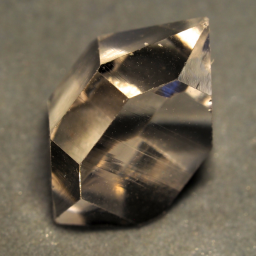
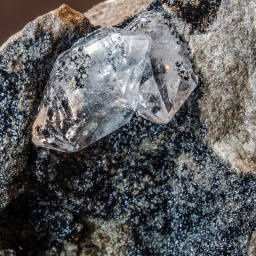
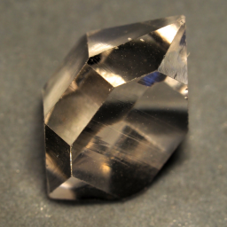
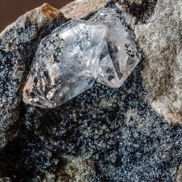

New here?

New to rockhounding and don't know where to start? Not to worry, we will show you the ropes. Click below to head over to our "Getting Started" guide
Getting StartedGem Mining Near Me: Herkimer Diamonds
 



Explore rockhounding maps to hunt for Herkimer Diamonds, crystals, gemstones, and minerals. Herkimer County in New York offers a unique rockhounding experience, with opportunities to find the famous Herkimer Diamonds. Popular sites include Herkimer Diamond Mines, Ace Of Diamonds Mine, and the Crystal Grove Diamond Mine.
Sponsored Dig Site

Own a digsite you would like to advertise? Contact us for more information about being our sponsorship packages.
Advertise With Us
Please always bring appropriate attire and do research before venturing out to rock hunt and crystal hunt. Also, be sure to verify that the location you want to hunt at is available for public access. Rockhounding.org does our best to verify, but it is your responsibility to verify as well because sometimes things change. We are not liable for any actions you take from the information you find on this site.
Crystal Hunting & Gemstone Mining Near Me
Must Have Gem Hunting Tools


All About Herkimer Diamonds: History, Geology, and Where to Find Them
Herkimer Diamonds, renowned for their exceptional clarity and natural faceting, are not actual diamonds but rather double-terminated quartz crystals. Named after Herkimer County in New York, these unique gemstones have fascinated gem enthusiasts and collectors for centuries. Their diamond-like shape and remarkable brilliance make them highly sought after.
The History of Herkimer Diamonds
The discovery of Herkimer Diamonds dates back to the late 18th century when settlers in the Mohawk Valley region of New York began unearthing these unique crystals. These quartz crystals garnered the name "Herkimer Diamonds" due to their diamond-like shape and exceptional clarity. Historically, Native Americans are believed to have used these crystals for various purposes, including tools and ornaments. The commercial mining of Herkimer Diamonds began in the early 19th century, and they quickly gained popularity among gem collectors and jewelry makers.
Geology of Herkimer Diamonds
Herkimer Diamonds are found in the dolostone rock of the Cambrian age, approximately 500 million years old. These crystals form in cavities within the host rock, often in near-perfect hexagonal shapes with points on both ends. The unique geological conditions in Herkimer County, such as the presence of organic materials and mineral-rich waters, contributed to the formation of these stunning crystals. The dolostone matrix in which they are found is a sedimentary carbonate rock, which underwent significant geological processes to create the perfect environment for these crystals to form. The formation process involves silica-rich fluids filling cavities in the dolostone, where over time, quartz crystals grow and develop their distinctive double terminations.
Physical Properties and Unique Characteristics
Herkimer Diamonds are admired for their unique physical properties. They typically exhibit:
- Exceptional Clarity: Many Herkimer Diamonds are water-clear, with few inclusions, making them visually stunning and highly prized by collectors.
- Natural Faceting: These crystals often have 18 natural facets, with points at both ends, known as double terminations.
- Hardness: Herkimer Diamonds rank 7.5 on the Mohs hardness scale, making them harder than typical quartz, which ranks 7.
Common Places to Find Herkimer Diamonds
While Herkimer County in New York remains the most famous location for finding Herkimer Diamonds, there are several notable sites where enthusiasts can mine these crystals:
- Herkimer Diamond Mines: Located in Middleville, New York, this site offers public mining opportunities and is one of the most popular destinations for Herkimer Diamond hunters. Visitors can dig for their own Herkimer Diamonds and participate in educational tours and workshops.
- Ace of Diamonds Mine: Another prominent site in Middleville, known for producing high-quality Herkimer Diamonds and offering mining tours and educational experiences. The Ace of Diamonds Mine is a favorite among serious rockhounds and offers both surface collecting and deep digging opportunities.
- Crystal Grove Diamond Mine: Situated in St. Johnsville, New York, this site is favored for its beautiful surroundings and productive digging areas. The Crystal Grove Diamond Mine provides a serene setting for mining Herkimer Diamonds and is known for its well-maintained facilities and friendly staff.
- Little Falls: Known for its scenic beauty and rich deposits of Herkimer Diamonds, Little Falls is a great spot for combining gem hunting with outdoor exploration. The area offers stunning landscapes and numerous hiking trails, making it an ideal destination for nature lovers and rockhounds alike.
Tips for Successful Herkimer Diamond Hunting
For those interested in gem mining and rockhounding, these locations provide excellent opportunities to discover and collect Herkimer Diamonds while enjoying the natural beauty of the region. Here are some tips for a successful Herkimer Diamond hunting experience:
- Come Prepared: Bring the right tools, such as rock hammers, chisels, safety glasses, and sturdy gloves.
- Patience and Perseverance: Finding Herkimer Diamonds can take time, so be patient and persistent in your search.
- Learn the Terrain: Familiarize yourself with the mining site and its specific rules and regulations.
- Take Breaks: Mining can be physically demanding, so take regular breaks to rest and stay hydrated.
- Respect the Environment: Always follow the "leave no trace" principles to preserve the natural beauty of the area.
Whether you're a seasoned gem hunter or a novice rockhound, the thrill of finding a Herkimer Diamond is an unforgettable experience. These beautiful and unique crystals offer a tangible connection to the geological history of the region and provide a rewarding hobby for enthusiasts of all ages.
Keeping accurate records of Rockhounding & Gemstone Hunting Locations is a community effort! Know of a good spot that is missing from our maps? Feel free to submit it below. Thank you for your contributions to the rockhounding community!